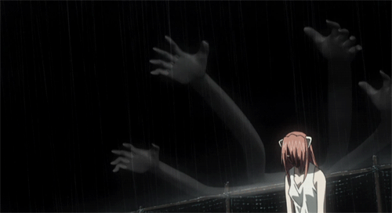
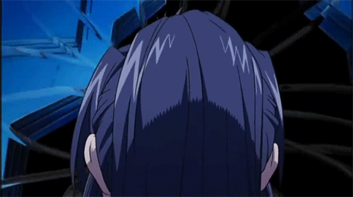

La historia gira alrededor de unas extrañas criaturas llamadas Diclonius, estas son la evolución de la raza humana, y por razones biológicas, buscan la destrucción de esta, y ser la especie dominante en el mundo.
Cuando la protagonista Lucy escapa de las instalaciones de una isla que se encuentra cerca de la costa de Kamakura, recibe un disparo que la hiere en su cabeza, desarrollando así una segunda personalidad. Finalmente es encontrada por Kōta, su amor de la infancia, y por Yuka, la prima de Kōta. Ella vivirá con ellos con su segunda personalidad inofensiva, quien tiene un comportamiento realmente infantil, llegando a pronunciar únicamente a palabra Nyu. Kōta, al no conocer su nombre, decide llamarla Nyu, ya que es la única palabra que pronuncia.
Según avanza la historia, se revelan los secretos de esta Diclonius, quien debe convivir con una cruda realidad.
Origen
Lucy era en realidad la primera diclonius y la "reina" de estos. Su madre era la fuente del virus de la mutación por lo cual le traspasaba dichas cualidades congénitas a sus hijos.
Vectores
Los vectores tienen una distancia limitada de unos pocos metros y variar en cantidad dependiendo de la criatura. Lucy es capaz de llegar a los dos metros mientras que Nana, Mariko y sus clones demuestran que tener mayor rango de distancia del normal; sus poderes como tal, llegaron a ser una gran amenaza para el mundo. Sin embargo, si estos vectores se utilizan para revertir sus efectos destructivos, el uso de tales niveles de potencia terminarán destruyendo la integridad del cuerpo del Diclonius, un ejemplo de esto sería Lucy quien al tratar de curar la herida de Kōta con sus vectores uniendo las venas para parar la hemorragia, su cuerpo se desintegra ya que es incapaz de soportar tanta energía y finalmente muere.


Jerarquía
Hay dos clases de Diclonius. Una de ellas es Kaede, la Reina y la otra los Silpelit. La variedad Silpelit es incapaz de reproducirse naturalmente a pesar de que obligatoriamente son en su totalidad, hembras. Como no pueden reproducirse por los medios comunes, utilizan sus vectores para inyectar su ADN a otras personas y desde ese momento, los hijos de estos serán Silpelit.